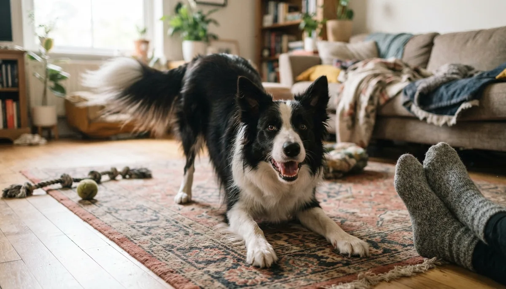

Dog Body Language Explained: What Your Dog Is Really Saying

Dogs are talking to us all the time — just not with words. Nearly everything a dog feels shows up first in the body: the tilt of an ear, the height of a tail, a quick lick of the lips. Once you learn to read those signals, a lot of "out of nowhere" behavior stops being mysterious. You'll spot a nervous dog before it snaps, know when your own dog is truly happy, and become the kind of person dogs relax around. Here's how to read the whole dog, part by part, using guidance from the American Kennel Club, the ASPCA and veterinary behaviorists.
Tail talk — a wag isn't always "happy"
The biggest myth in dog-reading is that a wagging tail means a friendly dog. A wag really means arousal — the dog is emotionally engaged — and the emotion can be joy, tension or uncertainty. Read the position and speed:
Tail position & motion Read together
Loose, sweeping wag (often with a wiggly bum): a genuinely happy, relaxed dog.
High, stiff, fast wag: high arousal and alertness — excited, but possibly over-threshold or ready to react. Not an invitation to reach in.
Low or tucked tail: worry, fear or appeasement. A tail clamped under the belly is a scared dog asking for space.
Neutral, level tail: a calm, comfortable dog. What "neutral" looks like differs by breed — a Husky's curl and a Greyhound's low tail are both normal resting positions.
Nerdy but true: research published in Current Biology found dogs tend to wag more to their right when they feel something positive (like seeing their owner) and more to their left when uneasy — and other dogs actually notice the difference.
Ears, eyes and mouth — the face tells the truth
Ears Forward = interest
Neutral / natural set: relaxed. Perked forward: alert and interested in something. Pinned flat back: fear, stress or appeasement. Floppy-eared breeds are harder to read — watch the base of the ear where it meets the head.
Eyes Watch for "whale eye"
Soft, blinky, almond-shaped eyes: a relaxed dog. Hard stare, wide eyes, or "whale eye" (whites/crescents of the eye showing as the dog looks away without turning its head): a clear stress and discomfort signal. A hard, unblinking stare is one to respect — give the dog room.
Mouth & face Subtle stress signals
Relaxed, slightly open mouth ("smiling"): a content, comfortable dog. Tightly closed mouth, lips pulled forward or back, sudden lip-licking or yawning (when the dog isn't tired or hungry): early stress signals. A "spatulate" tongue — flat, tense — and heavy panting with no exercise or heat also point to a stressed dog.
Posture & hackles — the big picture
Body weight & posture Loose vs. stiff
Loose, wiggly, weight balanced: relaxed and friendly. Leaning forward, weight over the front, tall and stiff: confident, aroused, possibly issuing a challenge. Crouched, weight shifted back, lowered body: fear or a wish to avoid conflict. Belly-up: often a relaxed request for a rub — but if the dog is stiff, tail tucked and mouth tense, a rolled-over belly is actually appeasement, not "rub me."
Hackles (raised fur) Arousal, not always aggression
The ridge of fur standing up along the back and shoulders (piloerection) is an involuntary sign of arousal — like human goosebumps. It can mean excitement, surprise or fear, not necessarily aggression. Read the rest of the body to know which.
The play bow "Let's play!"
Front legs down, bum in the air, tail wagging, a bouncy expression — the universal dog invitation to play. It's also a reassurance signal that says "everything after this is just a game," which is why play-fighting rarely turns serious.
Calming signals — the polite "I mean no harm"
Dogs use a set of subtle gestures — often called calming signals — to defuse tension and communicate that they're not a threat. On their own each looks trivial, but noticing them is the key to catching stress early:
- Lip-licking and yawning when not hungry or sleepy
- Turning the head or whole body away from something
- Sniffing the ground abruptly in a tense moment
- A raised front paw, freezing, or moving in a slow curve
- "Shaking off" as if wet — a way to reset after stress
If your dog does these when a stranger leans over them or a child gets too close, they're politely asking for space. Honoring that request builds trust — and prevents the escalation below.
The stress ladder — and why you must never punish a growl
Dogs almost never bite "without warning." They climb a predictable ladder of signals, and a bite is the last rung, reached only when every quieter signal was missed or ignored:
- Subtle Lip-lick, yawn, look away, blink, turn head
- Clearer Body freezes, stiffens; whale eye; low tail; moving away
- Loud Growl, snarl, showing teeth, air-snap
- Last resort Bite
What a truly happy, relaxed dog looks like
Put it all together and a content dog is easy to spot. Loose, wiggly body; soft eyes with a relaxed, slightly open mouth; ears in their natural position; a tail wagging in a loose sweep or resting at neutral; and a general looseness through the whole body — no stiffness, no freezing. This is the dog you want to see when you offer a training treat like a piece of plain cooked chicken or a slice of carrot: relaxed, engaged and enjoying your company.
When body language means "get help"
Reading the signals is step one; acting on them is step two. Talk to your veterinarian or a qualified, force-free trainer or veterinary behaviorist if your dog frequently shows fear or aggression, if calm behavior suddenly changes (a normally easygoing dog that starts growling or hiding can be in pain), or if you're ever unsure whether an interaction is safe — especially around children. A sudden shift in body language can be the first sign of illness, so a vet check is a smart first stop.
Frequently asked questions
Does a wagging tail always mean a dog is friendly?
No. A wag signals arousal, not necessarily happiness. A high, stiff, fast wag can mean tension or over-excitement, and a low or tucked wagging tail signals worry. Read the tail's height and looseness along with the ears, eyes and body before assuming "friendly."
Why does my dog yawn or lick its lips when it's not tired?
Those are classic calming signals — small stress-relief gestures dogs use when they feel uncomfortable or want to defuse tension. If you see them when your dog is being hugged, approached or crowded, they're politely asking for a little space.
Is it bad if my dog's hackles go up?
Not necessarily. Raised hackles (piloerection) are an involuntary sign of arousal — it can be excitement, surprise or fear, not just aggression. Look at the rest of the body to tell which emotion is driving it.
Should I stop my dog from growling?
Never punish a growl. It's a warning that prevents bites. Punishing it teaches the dog to skip straight to snapping. Instead, calmly move your dog away from whatever triggered it and get help from a vet or force-free behavior professional to address the underlying cause.
How do I know if my dog is actually happy?
Look for looseness: a wiggly body, soft blinking eyes, a relaxed open mouth, ears in their natural set, and a loose sweeping tail. A happy dog is soft and fluid all over — no stiffness, staring or freezing.
By the CanMyPet Editorial Team · Reviewed against guidance from the American Kennel Club (AKC), the ASPCA and veterinary behavior sources (including research on tail-wagging asymmetry published in Current Biology) · Published July 2026.
🧊 Get the free Pet Food Fridge Guide
A printable checklist of 50+ foods your dog & cat can and can't eat — plus seasonal pet-safety tips. No spam, unsubscribe anytime.